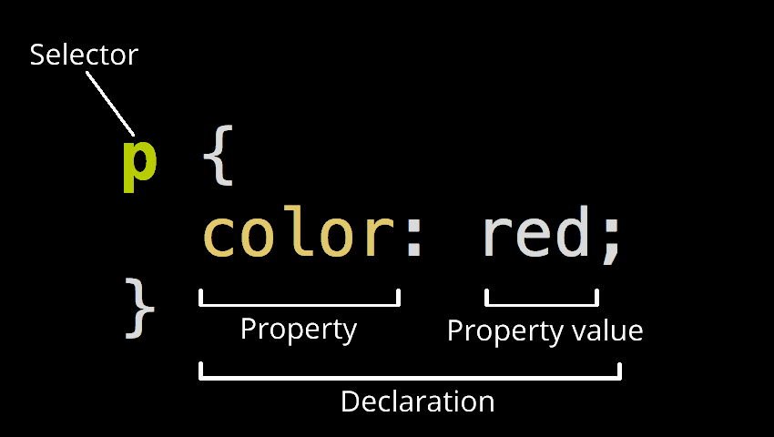
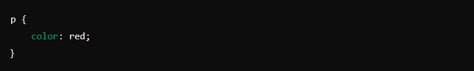
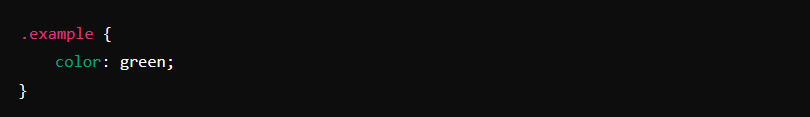
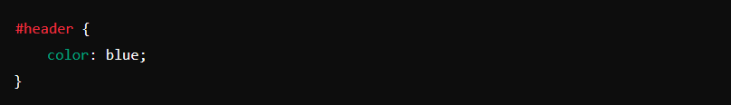
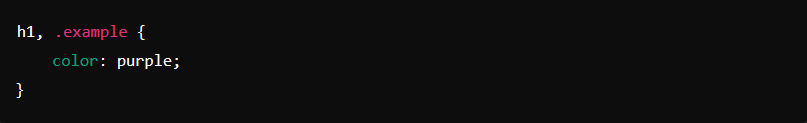

Основы CSS: что это такое и зачем нужно
CSS (Cascading Style Sheets) — это язык стилей, используемый для описания внешнего вида и форматирования документов, написанных на HTML. Он позволяет отделить содержимое страницы от её дизайна.
Основные задачи CSS:
- Определение внешнего вида веб-страниц.
- Изменение цветов, шрифтов, отступов, выравнивания и других параметров.
- Улучшение пользовательского опыта за счёт создания привлекательного и удобного интерфейса.
Способы подключения таблиц стилей
CSS-стили можно подключить к HTML-документу несколькими способами. Давайте рассмотрим каждый из них.
Внутренние стили (Embedded CSS)
Внутренние стили определяются внутри самого HTML-документа с помощью тега style . Этот способ удобен для задания стилей для конкретной страницы.

Внешние стили (External CSS)
Внешние стили определяются в отдельном файле CSS, который подключается к HTML-документу с помощью тега link. Этот способ позволяет использовать один файл стилей для нескольких страниц сайта.
HTML-документ (index.html):

Файл CSS (styles.css):

Встроенные стили (Inline CSS)
Встроенные стили задаются непосредственно в HTML-тегах с помощью атрибута style. Этот способ удобен для задания стилей для отдельных элементов.

Основные понятия и синтаксис CSS
Базовый синтаксис CSS
CSS состоит из блоков, называемых правилами. Каждое правило состоит из селектора и объявления.

- Селектор (selector): указывает, к какому элементу HTML применяется стиль (в данном случае, p).
- Объявление (declaration): определяет стиль, который будет применён к элементу. Оно состоит из свойства (property) и значения (value).
Основные селекторы
- Тег-селекторы: применяют стили ко всем элементам определённого тега. 
- Класс-селекторы: применяют стили к элементам с определённым классом. 
- ID-селекторы: применяют стили к элементу с определённым ID. 
- Комбинированные селекторы: позволяют применять стили к элементам, которые соответствуют нескольким условиям. 